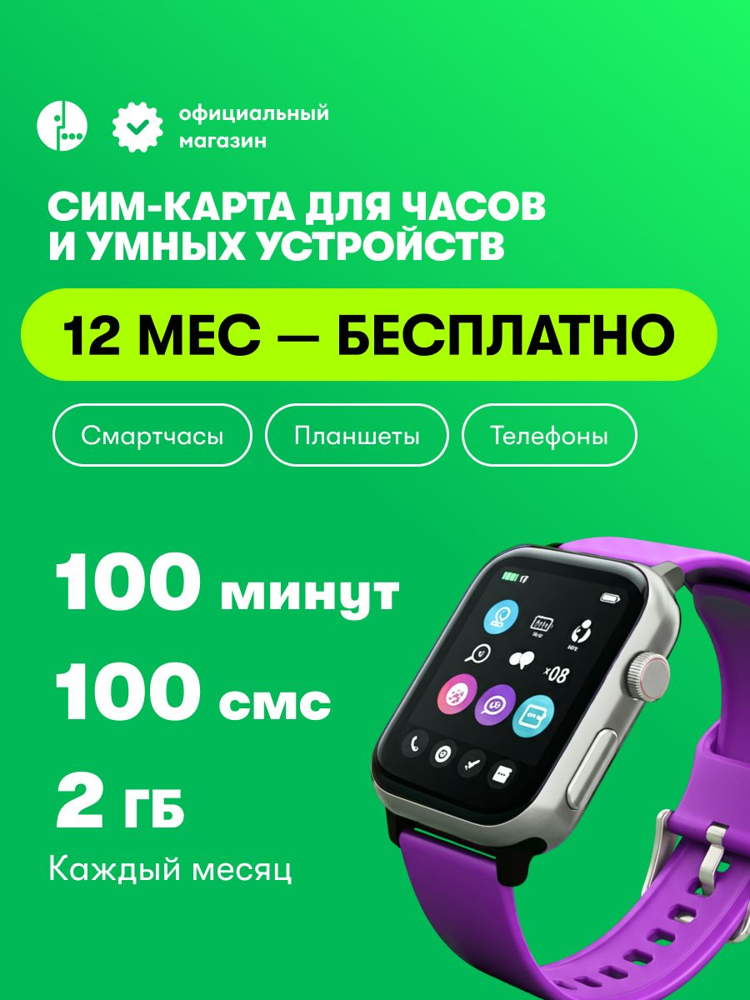
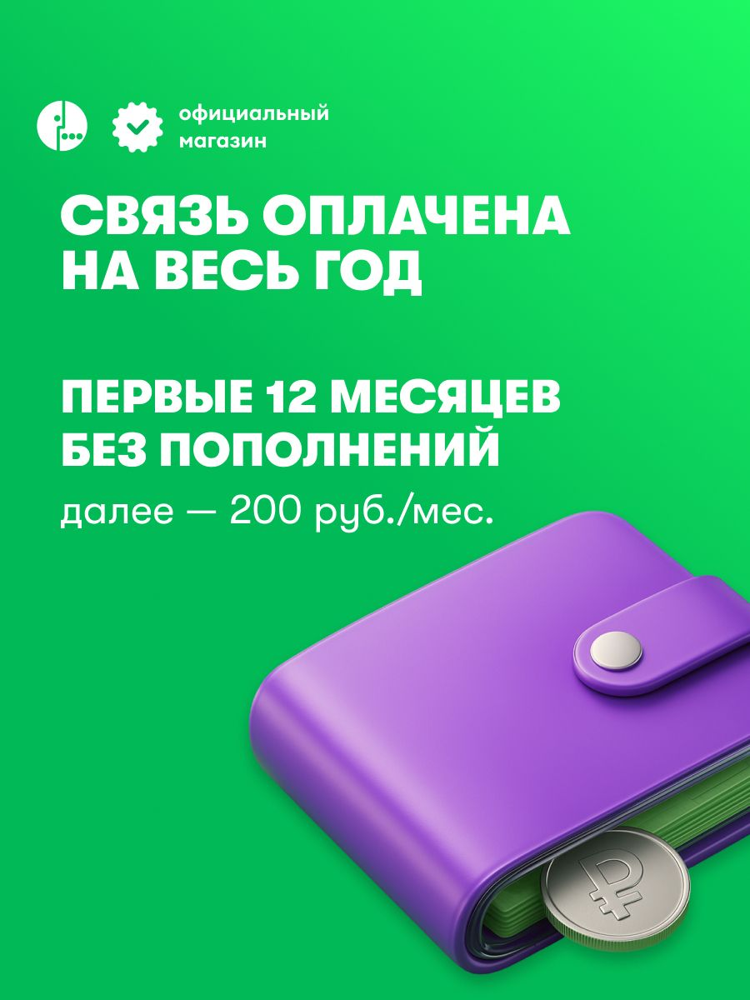

Выбраны связь характеристики с выгодой, денежный горизонт, область бесплатности, совместное значение текста и предмета, группировка условий и продолжение. Результат — два пригодных направления подачи и собственные ограничения периода. Экономия на всём рынке и реакция покупателей не назначаются; это не задерживает принятие экспертной модели включённого года.
Карточка Ozon 3044399427 у продавца с отображаемым именем «МегаФон» предлагает SIM для устройств с оплаченными первыми 12 месяцами: каждый месяц 2 ГБ, 100 минут и 100 SMS; далее 200 рублей в месяц. В сохранённом наблюдении от 25 сентября 2026 года цена покупки составляет 750 рублей, валюта подтверждена собственными данными комплекта. Изучены все 25 файлов, включая восемь изображений. Это архивное предложение, а не проверка сегодняшнего тарифа.
Сильная модель здесь отличается от продажи низкой месячной ставки. Покупателю предлагают заранее обеспечить связь и не пополнять счёт ежемесячно в течение включённого периода. Для часов, второго устройства или техники с предсказуемым расходом такая организация может быть самостоятельной ценностью. Размер и распространённость этого спроса из рекламы не установлены.
Рекомендуется сохранить год как главный аргумент, связать его с платной покупкой и ежемесячным ресурсом, а затем ясно объяснить переход к следующей фазе. Не нужно превращать карточку в ещё одно предложение «дешевле в месяц», если исходная ценность состоит в отсутствии регулярного действия. Но преимущество должно оставаться ограниченным собственным ресурсом, подготовкой регистрации и реальной пригодностью устройства.

На первом кадре верхний текст задаёт SIM для часов и устройств. Ниже яркая горизонтальная плашка «12 МЕС — БЕСПЛАТНО», под ней три обозначения категорий: смарт-часы, планшеты, телефоны. В левой части перечислены 100 минут, 100 SMS и 2 ГБ; возле последней строки стоит «Каждый месяц». Справа крупно показаны часы с фиолетовым ремешком и экраном приложений.
Логика сообщения начинается с временной выгоды. Число 12 и слово «бесплатно» собраны в один яркий блок и сильнее выделены, чем условия пользования. Изображение часов выполняет предметную функцию: показывает класс техники, для которого предлагается связь. Оно не устанавливает, что часы входят в комплект, что показанная модель проверена или что приложение на их экране будет доступно после активации.
«Бесплатно» здесь требует восстановления предмета. В описании названы оплаченный тариф и первые 12 месяцев без пополнений. Цена покупки 750 рублей относится к комплекту. Следовательно, точная ценность состоит в включённой связи за оплаченный горизонт, а не в бесплатном получении SIM или неограниченном пользовании. Без этого перехода читатель вынужден самостоятельно решать, почему бесплатный год продаётся за деньги.
Сильный проект формулировки: «Связь на первые 12 месяцев включена в стоимость комплекта. Каждый месяц: 2 ГБ, 100 минут и 100 SMS. В сохранённом предложении комплект стоит 750 рублей; далее 200 рублей в месяц». Для будущего размещения действующая цена и условия подтверждаются заново. Такой текст сохраняет годовой аргумент и не превращает его в бесплатную покупку.
Важна область «каждый месяц». Это не 2 ГБ на весь год и не годовой безлимит. Стоящая возле списка подпись получает объяснение в основном тексте, а не только в справочной части. Возможное уменьшение впечатления бесплатности является встречным эффектом новой подачи; его нельзя заранее объявить коммерчески полезным или вредным без сравнения подходящих покупок.

Крупный заголовок сообщает «Связь оплачена на весь год», следующий блок «Первые 12 месяцев без пополнений», затем меньшая строка «далее — 200 руб/мес». Нижнюю половину занимает закрытый фиолетовый кошелёк; возле него видна монета со знаком рубля. Цвет предмета повторяет ремешок часов и другие акценты галереи.
Буквальный предмет принадлежит денежной сфере. Он может представлять оплату по связи с действием, то есть работать как метонимия. Связка закрытого кошелька и отсутствия пополнений допускает дополнительное прочтение: не нужно регулярно доставать деньги или возвращаться к платежу. Оно сильнее общего толкования «экономия», потому что подпись прямо говорит о действии пополнения. Величина экономии на этом кадре не показана.
Альтернатива состоит в стандартной иллюстрации финансового условия без отдельного смысла закрытости. Её нельзя исключить; поэтому не следует объявлять замкнутый кошелёк доказанной метафорой спокойствия. Тем более изображение не показывает возврат денег, денежный подарок или фактический остаток покупателя. Число 1751 в характеристиках относится к стартовому балансу; его нельзя вычесть из 750 как возвращаемые наличные.
Композиция сохраняет две фазы в одном кадре, что является сильной практикой. Но по весу они различаются: крупный год и большой кошелёк доминируют над последующим месячным условием. Решение состоит в общей временной схеме «при покупке → первые 12 месяцев → затем», где граница фазы остаётся различимой. Не нужно делать все элементы одинаковыми: преимущество может быть главным, если последующее обязательство доступно и связано с ним.
На кадре 4 заголовок «Защита — это важно», затем названы спам, мошенники и нежелательные подписки. Внизу большой прозрачный фиолетовый щит с навесным замком. Щит предлагает отношение преграды, замок ограничение доступа; объединение двух знакомых знаков усиливает общий смысл защищённости. Глянцевый объём связывает предмет с остальными иллюстрациями.
Эти операции не одинаковы. Сам щит уже является условным знаком защиты; перенос физической преграды на цифровую услугу может поддерживаться контекстом. Замок дополнительно сужает доступ. Но на изображении нет конкретного взаимодействия угрозы и преграды, поэтому развёрнутый сюжет «мошенник остановлен» был бы добавлением аналитика. Текст ограничивает предмет; его необходимо сохранять рядом с образом.
Для использования в часах возможен побочный широкий смысл: защита самого ребёнка, устройства или местонахождения. Рекламный материал этого не устанавливает. Такой риск прочтения не означает, что все покупатели так понимают щит. Он задаёт точное требование редактору: назвать действительный механизм услуги и не подменять его обещанием безопасности человека. Если механизм действительно состоит в запросе подтверждения подписки, его следует показать как процесс, а не только как ещё один знак доверия; для этой годовой SIM он требует собственной опоры.
Кадр 3 показывает четыре примера техники в одинаковых плитках. Здесь равенство формы уместно: все плитки представляют категории применения. Заголовок «на всех устройствах» шире этих примеров; достаточность 2 ГБ, частоты и голосовой функции остаётся отдельным вопросом конкретной модели.
На кадре 5 та же логика сетки используется иначе: четыре номера подписывают Госуслуги, Госключ, «Или подтверждённый номер МегаФона» и смартфон с интернетом. Цифры предлагают чтение как общий список или порядок действий, но «или» относится к альтернативному способу подтверждения. Смартфон является общей технической предпосылкой, а не альтернативой Госключу. Это содержательное напряжение группировки и логики.
На кадре 6 ветви раскрыты яснее: действующий номер абонента либо Госуслуги с Госключом. Здесь уже есть нумерованная вертикальная последовательность, выбор региона, номера и тарифа. Но годовой комплект продаётся с включённым конкретным наполнением. Покупатель должен понимать, как выбор на экране связан с сохранением именно этого предложения. Реальный интерфейс и доступность показанных ветвей не предоставлены.
Предлагаемая организация: сначала общая подготовка, затем две подписанные ветви идентификации, затем результат подтверждения своего комплекта. Возраст 14+ и гражданство РФ на кадре 5 сохраняются как условия источника; они не переносятся из другого оператора или на все способы подключения без проверки. Нельзя принять краткое «активация в один клик» по декоративному изображению SIM и переключателя на кадре 6.
Кадр 7 перечисляет проблемы доставки и товара, затем просит написать в поддержку перед отзывом. Гарнитура с речевым облаком представляет обслуживание; белая плашка выделяет предлагаемый порядок действия. Это реальный приём направления поведения в сообщении: затруднение → обращение → возможное решение. Он может обслуживать восстановление продажи и управление отзывами одновременно. Из него нельзя установить, что магазин отвечает быстрее, действительно устраняет проблему или не допускает отрицательных оценок.
Кадр 8 завершает галерею названием официального магазина и обещанием помощи «всегда» и по «любым вопросам». Большая объёмная эмблема повторяет брендовый знак. Смысл авторитета поддерживается повтором логотипа, значком с галочкой и словом «официальный». Это наблюдаемое утверждение источника; юридическая связь, объём полномочия и способность выполнить универсальное обещание не доказаны этими же знаками.
Усилить можно не число эмблем, а предметность поддержки: какие ситуации она разбирает, какой шаг доступен, что считать восстановленным результатом. Неизвестный срок ответа остаётся неизвестным. В качестве рабочего проекта допустимо описать процесс; как гарантию его можно использовать после подтверждения исполнения.
Здесь есть три разных пути влияния. Первый усиливает ценность: заранее оплаченный горизонт уменьшает число будущих действий по пополнению при подходящем потреблении. Второй уменьшает усилие понимания: временная схема связывает стоимость покупки, включённые ресурсы и следующую плату. Третий поддерживает исполнение: ясная подготовка и подтверждение нужного пакета перед завершением.
Вариант А сохраняет ресурсное начало: часы, месячное наполнение, включённые 12 месяцев. Он подходит задаче выбора функции и объёма. Вариант Б начинает с предсказуемости: одна покупка комплекта, первые 12 месяцев без пополнений, ежемесячное наполнение и затем 200 рублей. Он делает главным денежный горизонт. У обоих вариантов одинаковые подтверждённые условия; выбор не решается эстетическим предпочтением.
Послепокупочное сопровождение может напомнить о завершении настройки и приближении конца включённого периода. Это проект своевременной помощи, а не установленное удержание. Напоминание о следующей плате должно опираться на реальное начало периода и доступное право коммуникации; такой сервис в материалах не подтверждён. Его не следует выдавать за уже работающую функцию продавца.
Для этого SKU в предоставленной таблице нет сопоставленной строки продаж. Это пробел, а не ноль и не основание объявлять годовую модель неуспешной. Маржа продавца, операторское вознаграждение, возвраты и длительное использование неизвестны. Цена 750 рублей не является прибылью; баланс 1751 не является возвратом.
Нельзя сравнить годовой комплект с 5 ГБ Билайна как два полностью одинаковых продукта: различаются объём, минуты и денежная фаза. Допустим контраст моделей и условный расчёт на общем горизонте с явными предпосылками. Для внедрения важнее проверить собственную пригодность, завершённые оплаченные подключения и расходы сопровождения. Все восемь изображений рассмотрены: продукт, денежная фаза, техника, защита, подготовка, активация, восстановление и авторитет. Их целостный смысл состоит в предсказуемой связи для подходящего устройства, а не в универсально бесплатной и защищённой услуге.